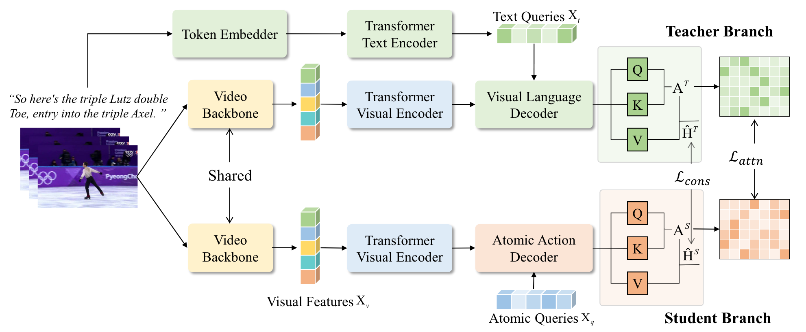

Transformer
2021: SGN
Semantics-Guided Representations (for Figure Skating)
1 Introduction
-
先前的工作
-
大多数工作局限于根据 visual input 预测得分，限制了 depict highlevel semantic representation 的能力
他们侧重于利用 视觉上下文信息，但未探索视频中的语义信息
-
如何通过计算机视觉对 semantic reprsentation 进行 depicts and interacts 仍未明确
-
-
本文工作
- 聚焦于提取 Figure-Skating 项目中的 semantic-aware representations
- 提出了 Semantic-Guided Network (SGN) 以弥合 语义-视觉信息 之间的差距
- 是一个 teacher-student-based network (with attention mechanism)
- 使得知识从 semantic domain 迁移到 visual domain
-
在 teacher branch 通过 cross-attention 机制聚合 semantic descriptions & visual features，为 visual domain 提供监督
除 OlympicFS 提供的 comments 外，teacher branch 中的语义表示也可以从音乐等模态中提取
-
在 student branch 使用了一串 learnable atomic queries 来模拟 teacher branch 的 semantic-aware distribution
旋转、跳跃等细粒度 query 使得模型能够识别视频中的关键原子动作，其训练受 semantic domain 中的 teacher 监督
-
提出了三种 Loss 来 align 来自不同 domain 的 features
- 提出了多模态数据集 OlympicFS，提供了 score + professional comments。数据来自 2018年平昌冬奥会 和 2022年北京冬奥会。
- benchmarks: OlympicFS, FS1000, Fis-v, MTL-AQA(diving)
2 Related Works
Figure Skating Analysis
-
CV 领域关于 FS 的最早研究是 Pirsiavash 在 14 年基于 ST-Pose feature 训练的回归模型
-
Xu 从女子单人项目中收集了 500 个视频，并提出了一种包含 self-attentive & multi-scale LSTM 的机制，用于学习 local & global SeqInfo
-
数据集 FSD-10 包含了 男子/女子 项目中的 10 种不同动作，并提出了用于 分类 的 key-frame-based temporal segment network
-
ACTION-Net 学习了在特定帧中检测到的运动员的视频动态信息和静态姿势，以加强视频中的特定姿势。
-
EAGLE-Eye 构建了一个双流网络，用于推理表演过程中关节协调和外观动态之间的关系。
-
Xia 提出多模态模型 MLP-Mixer（音频 + 视觉信息），并通过 memory recurrent unit 有效地学习长期表示；同时收集了 FS1000 数据集。
Multimodal Learning
最近，Transformer 模型不仅在 NLP 中得到了广泛应用，同时在 CV 任务重表现出了良好的性能。
虽然这些方法依赖于大规模数据集，并采用多模态自监督任务进行预训练。
但 AQA 领域尚未提出多模态大规模模型
3 Approach

1) Feature Extraction
-
对于视频输入：
- 使用 Temporal segment networks 将输入视频划分为 \(T_v\) 个 segments
- 使用 Video swin transformer 从 segment 中提取 visual feature
- 使用 MLP 进行特征降维，得到 \(X_v \in \mathbb{R}^{T_v \times D}\)
-
对于文字输入：使用 token embedder + BERT 提取特征 \(X_t \in \mathbb{R}^{T_t \times D}\)
2) Extract Semantic-Aware Representations
每个 clip 仅包含当前 segment 的信息，缺少 global context info
-
使用 self-attention Encoder 来充实 segment-wise representation
-
通过计算 weighted aggregation of segment features 来得到 context info
此处的 weight 由当前 segment 与其他 segments 之间的协方差决定
\[ H_0 = \text{SoftMax}\left( \frac{W_{qs} X_v (W_{ks} X_v)^T}{\sqrt{D}} \right) W_{vs} X_v + X_v \]- \(W_{qs}, W_{ks}, W_{vs}\) 都是可训练参数
-
-
使用 feed-forward network (FFN) 对 \(H_0\) 进行进一步 fusion，得到 \(\hat{X}_v\)
Teacher Branch
从评论文本中提取 semantic-aware representations
-
通过构建 visual-text feature 之间的 cross-attention 来学习 semantic corr.
-
(受 DETR 启发) 本文的 Transformer Decoder 共包含三部分: self-attention, croess-atention, FFN
- self-attention 用于挖掘 text feature 之间的关系，得到 \(\hat{X}_t\)
-
cross-attention 用于从 \(\hat{X}_t, \hat{X}_v\) 中学习 context-aware representations
- \(query\) 通过 \(\hat{X}_t\) 生成，\(key, value\) 从 \(\hat{X}_v\) 变换得到
\[ Q_t=W_q\hat{X}_t,\ K_v = W_k\hat{X}_v,\ V_v = W_v\hat{X}_v \]- semantic corr \(A^T\) 由对应 \(query-key\) 之间的 dot-product similarity 衡量
\[ A^T = \text{SoftMax}\left(\frac{Q_tK_v^T}{\sqrt{D}}\right) \] -
FFN 用于 aggregate \(A^T, V_v\)，得到最终输出 \(H^T\)
\[ H^T = FFN(A^T V_v) \in \mathbb{R}^{T_t \times D} \]
3) Semantics-Guided Network
- 先前的多模态模型会把 visual-semantic info 混合在一起进行预测
- 本文则是通过 semanticRep 指导对 visual feature 的学习
Student Branch
-
定义长度为 \(K\) 的 atomic queries \(X_q \in \mathbb{R}^{K \times D}\)
这些 query 用于表示评分中的关键语义信息，例如出色的跳跃或糟糕的摔倒。
在应用 self-attention 后更新为 \(\hat{X}_q\)
-
类似于 teacher branch，student branch 也由三部分构成（不过用 queries 替代了 \(\hat{X}_t\)）
\[ \begin{align*} Q'_q &= W'_q \hat{X}_q,\ K'_v = W'_k\hat{X}_v,\ V'_v = W'_v \hat{X}_v \\ A^S &= \text{SoftMax}\left(\frac{Q'_q K'^T_v}{\sqrt{D}}\right) \in \mathbb{R}^{K \times T_v}\\ H^S &= FFN(A^S V'_v) \in \mathbb{R}^{K \times D} \end{align*} \]\(A^S\) 是 attention map，\(H^S\) 是 student branch 的输出
Evaluation
-
distillation loss
- 目标：最小化 \(A^T, A^S\) 两个 self-attention matrices 之间的差异
-
但是 \(A^T \in T_t \times T_v,\ A^S \in K \times T_v\) 具有不同的 shape (\(T_t \gg K\))，因此需要沿 \(T_t/K\) 纬度进行 MaxPooling，生成 \(\hat{A}^T / \hat{A}^S\)
这样可以提取最显著的特征并增强特征表示能力，而不会丢失有用的信息
\[ \mathcal{L}_{attn} = \frac{1}{T_v h} \sum_{i=1}^{T_v} \sum_{j=1}^h \text{MSE}(\hat{A}_{ij}^T, \hat{A}_{ij}^S) \]\(h\) 为 Transformer 中的 attention heads，\(\hat{A}_{ij}\) 是 ith-clip jth-head 的 normalized attention
-
objective loss
除了限制 teacher-student branch 的 attention distribution 之外，作者还使用了 Noise Contrastive Estimation(NCE) loss 来 align teacher-student branch 之间的 output feature
-
通过将 target instance \(H^S\) 与更多的 negative sample 进行对比，并与对应的 positive sample\(H^T\) 进行 align
-
在 \(T_t/K\) 纬度上使用 AveragePooling 来将 teacher-student feature 映射到相同的纬度上
\[ \mathcal{L}_{cons} = -\log{\frac{\exp{(\text{sim}(\hat{H^S_i},\hat{H^T_i})/\tau)}} {\sum_{j=1}^N\mathbb{1}_{[j \neq i]}\exp{(\text{sim}(\hat{H^S_i},\hat{H^T_i})/\tau)}}} \]- \(\mathbb{1}_{[j \neq i]}\) 是一个 indicatorFunc，当 \(j\neq i\) 时取 1
- \(\text{sim}(u,v) = u^T v / |u||v|\) 表示 \(l_2\) normalized 的 \(u·v\) 点积
- \(\tau\) 是 temperature 超参数
- 这一 loss 在 mini-batch \(N\) 中的所有 positive-pairs 间被计算
-
-
scoring loss
- 本文将 AQA 任务定义为：预测和具有相同 category 视频间的 \(\Delta s\)
-
对于输入对 \(<X_{v.p}, X_{v,q}>\)，其 ground-truth 为 \(<S_p, S_q>\)，有：
\[ L_{score} = (\Delta S - |S_p - S_q|)^2 = (\mathcal{R}_{\Theta}(\hat{H_p},\hat{H_q}) - |S_p - S_q|)^2 \] -
由于模型具有 teacher-student 两个 branch，因此会有两个 relative score，分别记为 \(\mathcal{L}_{score}^T,\mathcal{L}_{score}^S\)
-
consistency loss
- to align the learned feature representations: 限制 teacher branch 预测的 \(\Delta S^T\) 与 student brach 预测的 \(\Delta S^S\) 相等
\[ \mathcal{L}_{c-score} = (\Delta S^T - \Delta S^S)^2 \]
2023: FSPN
1 Abstract
-
先前的工作
-
大多数基于 粗粒度(coarse-grained)特征 进行训练、采用 holistic video representations，缺乏对 fine-grained intra-class variations 的捕捉
-
Parmar and Morris 认为所有的 sub-action sequences 对结果具有 相等的贡献
-
segmenting action sequences along with their temporal dependence remains a challenging task：
-
缺少预定义的 标签 & action sequence 之间的关联性
-
sub-action sequences 具有非常细的粒度，动作间的变化十分平滑 => 难以确定其边界
-
由于动作十分细密、在相似的背景中进行，各 sub-action 之间有较多的共同 attributes
-
-
-
创新点
提取 fine-grained sub-action sequence 和它们的 temporal dependencies 有助于做出更准确的估计
为了降低背景的干扰，本文使用预训练模型从 input video 中提取了 actor-centric regions
-
提出了由两部分组成的 FSPN：
-
intra-sequence action parsing module 无监督
对更细粒度下的 sub-actions 进行挖掘
实现 semantical sub-action parsing，从而更准确的描述动作序列间的细微差别
-
spatiotemporal multiscale transformer module
低阶特征缺乏语义信息，高阶特征难以对 sub-action 进行细粒度描述
学习 motion-oriented action features、挖掘其在不同时间范围内的 long-range 依赖关系
-
-
提出了一个 group contrastive loss
此外，由于整个动作序列可能存在组件重复 ABBBBCC，模型使用了 1D Temporal Convolution + Transformer Network 来提取 single-scale feature
最终，各阶段特征会通过 multiscale temporal fusion 聚合生成 unified feature represen- tation，并用于最终的预测
-
2 Relative Works
-
AQA
-
Regression Formulation
-
Pairwise Ranking Formulation
-
-
(Fine-grained) Action Parsing
-
Zhang: Temporal Query Networks => 通过 query 找出相关的 segments
-
Dian: TransParser => 对 sub-action 进行挖掘（无监督）
-
-
Vision Transformer
从 低分辨率图片 & 较小的通道数量 开始，逐渐增加通道并减少 spatial resolution
3 Approach

问题定义
对于给定 input video \(x_i \in \mathbb{R}^{T \times H \times W \times C}\) 及其对应的分数标签 \(y_i\)，AQA 问题可以认为是一个回归问题：
T, H, W, C 分别为 clip 长度、视频宽高、通道数
-
使用预训练模型 \(D(.)\) 得到运动员所在的 BBox \(x_a\)
\[ x_a = D(x_i) \in \mathbb{R}^{T \times H \times W \times C} \] -
将 原始输入 和 BBox 都输入 (相同的)I3D 来提取 spatiotemporal 特征 \((f_i, f_a)\)
\[ f_i = E_v(x_i),\ f_a = E_v(x_a) \] -
使用 FSPN \(\mathbb{F}_\Theta(.)\) 提取特征，并最终进行回归运算
\[ \overline{y}_i = R_{\theta}(\mathbb{F}_\Theta(E_v(x_i)),\mathbb{F}_\Theta(E_v(x_a))) \]
Intra-Sequence Action Parsing
1 Intra-Sequence Action Parsing (IAP)
确定每个 sub-action 的 起始帧 & 结束帧
-
给出的 Parser 可以对 \(S\) 个 sub-action 的分布概率进行预测，同时指出 “转变” 发生的具体帧编号 \(f^{th}\)：
features -> probability vec \(A_s\) (对 \(s^{th}\) sub-action 的 middle-level 表示)
\[ [A_1, ..., A_s] = IAP(f_i,f_a) \] -
使用 up-sampling decoder + MLP layers projection head 构建 “分布概率预测器”
-
上采样包含四个 spatial-temporal dimensions 分别为：(1024, 12), (512, 24), (256, 48), and (128, 96) 的子块
-
temporal axis 会被卷积操作扩充
-
spatial dimensions 会被 Max Pooling 削减
-
-
使用了 3 Layer MLP
-
-
\(A_s(\vec{t})\) 表示 \(t^{th}\) 帧可能对应的 sub-action 概率分布；\(\vec{t}_s\) 是对 \(s^{th}\) 跳 action sequence 的预测结果
\(\text{argmax } A_s(\vec{t})\) 即为该帧最可能对应的 sub-action 类型
此时 t 与 t+1 必然对应不同的 sub-aciton => 新的 sub-action instance 从 \((t+1)^{th}\) 帧开始
\[ \vec{t}_s = \text{argmax } A_s(\vec{t}),\ \frac{T}{S}(s-1) \leq \vec{t} \leq \frac{T}{S}s \]上式保证了 \(\vec{t}_1 \leq ... \leq \vec{t}_s\)
2 Group Contrastive Learning
-
上一步得到的 \((f_i,f_a)\) 共享了较多的语义信息，直接对其进行比较学习会导致 对具有相同语义的动作序列学习得到不同的表示
=> 使用 Group Contrastive Learning，对具有相似 sub-action seq 的视频进行对比
-
输入的 \((f_i,f_a)\) 会被
- 赋予与其动作、语义具有最大相似度组别的 Pseudo Label \(p\)
- 最终生成 sub-action sequence \((\overline{f}_i,\overline{f}_a)\)
-
具有相同 Pseudo Label 的 feature 将组成如下的 group：
\[ G^p_k = \frac{\sum_{i=1}^B g(A_s^k)}{T_B},\ \text{where } p=A_s^k \]-
\(g(.)\) 是序列 \(A_s^k\) 的 logits
-
\(T_B\) 是 Group \(B\) 的序列总量
-
-
我们使用 Group 的 average representation \(G_f^g\)，定义：
-
positive-pair：\(G_a^p, G_i^p\) （上标组别相同）
-
negative-pair：\(G_a^p, G_k^q\) （上标组别不同）
Action Seq 相同，但 Sub-action Seq 不同
-
Spatio-Temporal Multiscale Transformer
输入 sub-action sequence \((\overline{f}_i,\overline{f}_a)\)，并在不同 scale 上挖掘 long-range dependencies
1 Actor-Centric Multiscale Transformer
-
本文提出的 Transformer 各阶段具有各异的 channel resolution => channel & scale 逐渐增加
-
该 Multiscale Transformer，由 3 * stage（结构相同）构成
-
每个 stage
-
在 early Layer 处理粗粒度特征，并在更深层处理细粒度特征
-
各包含了 3 个 transformer block + 8 attention head，用于处理相同 scale 的信息并生成 Attention 值
\[ \hat{f}_i += MLP(LN(attention)), attention = Multihead(LN(\frac{Q_a(K_i)^T}{\sqrt{d_k}})V_i) + \overline{f}_i \]\(Ln(.)\) 为 Layer Norm 操作，\(MLP\) 为两层使用 GELU 激活函数 
block 结构：\(\overline{f}_a = query, \overline{f}_i=memory\)
-
-
对于输入特征 \(f \in \mathbb{R}^{T' \times C'}\):
-
进行一次 1D 卷积 (kernel=3, stride=1)
-
使用包含 \(L\) 个 block 的 Multiscale Transformer，其中 stage n 的 output_shape = \(T' \times 2^nC'\)（放大）
channel dimesion 会在 stage 切换时通过 MLP 扩大 2 倍
-
-
2 Multiscale Temporal Fusion

对于第 \(n\) 层的 output shape 为 \(F_n = T' \times 2^nC'\)，而第 \(n+1\) 层则为 \(F_{n+1}= T' \times 2^{n+1}C'\)
-
为了成功进行 aggregate，我们需要进行 upsampling: \(U_\varphi(F_n) = \text{Upsampling}(R_n\mathcal{W}^n)\)
-
随后使用 element-wise addition 更新 \(F_{n+1} = U_\varphi(F_n) + F_{n+1}\mathcal{W}^{n+1}\)
最终通过 fuse 的到的 intergrated feature \(\mathcal{F} = \text{Concat}(F_1, ..., F_{N})\)
4 Optimization
Overall Training Loss
最终将由 2-Layer MLP 对 \(\text{MaxPool}(\mathcal{F})\) 预测得到分组标签 \(\gamma_i\) 和 回归分数 \(y_i\)
-
对于回归预测，有：
\[ \begin{align*} L_{bce} &= - \sum_{i=1}^I(\gamma_i log(\overline{\gamma_i}) + (1-\gamma_i)log(1-\overline{\gamma}_i)) \\ L_{reg} &= \sum_{i=1}^I \| \overline{y}_i - y_i\|^2,\ \text{where } \gamma_i = 1 \end{align*} \] -
对 Group Contrastive，有：
\[ L_{gc} = - \log{\frac{ h(G_a^p,G_i^p) / \tau }{ h(G_a^p,G_i^p) / \tau + \sum_{q=1,k}^S h(G_a^p,G_k^q) }}, \text{ where }p\neq q \]-
\(h(.) = \exp{(\text{cosine similarity})}\)
-
\(\tau\) 是 teperature 超参数
-